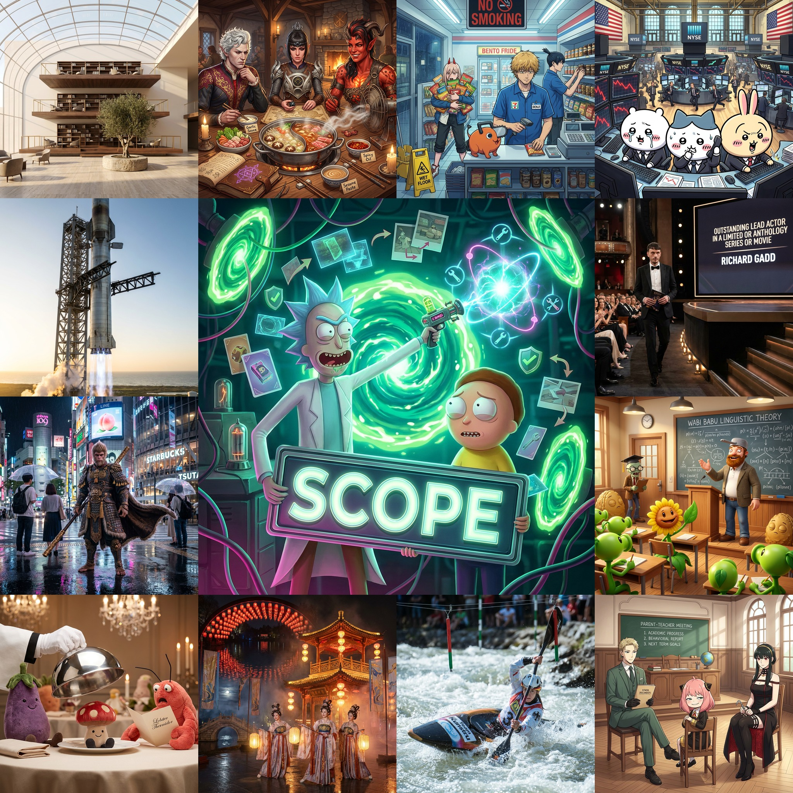
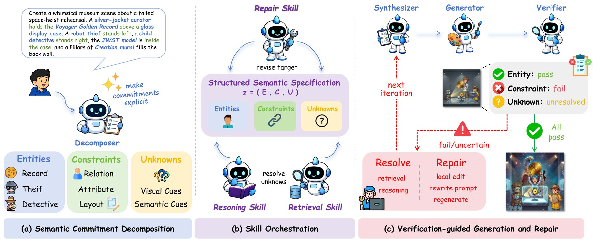
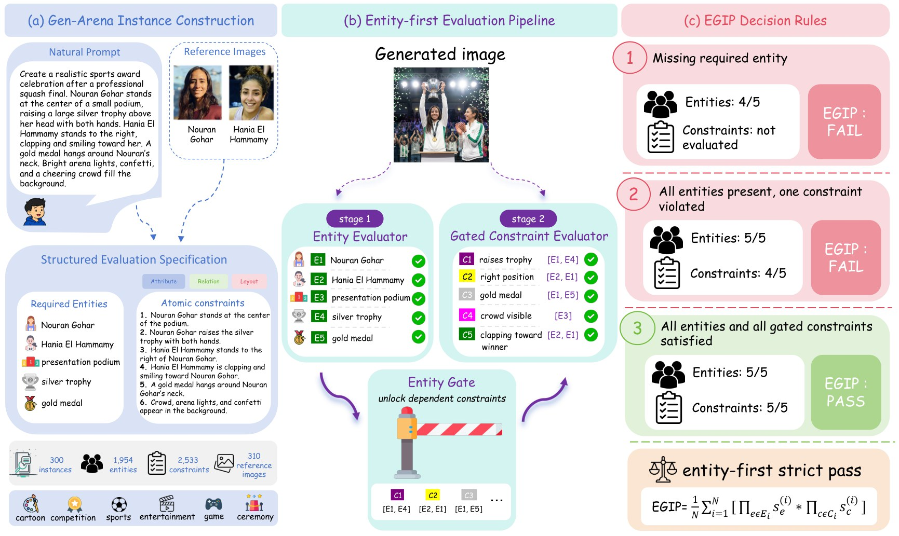
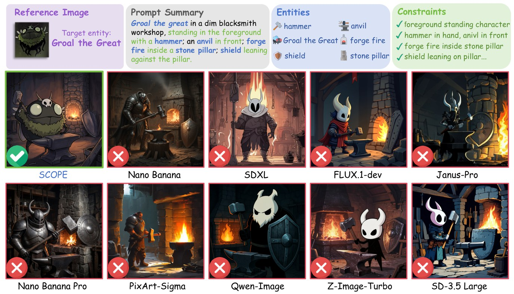

Conceptual Rift
Multi-step generation can retrieve facts, verify outputs, or repair images, but these operations often lose track of which semantic commitment they are resolving or fixing.
A specification-guided framework that keeps semantic commitments identifiable across generation lifecycle.
1MoE Key Laboratory of Brain-inspired Intelligent Perception and Cognition, University of Science and Technology of China
2CUHK MMLab 3East China Normal University 4The Hong Kong Polytechnic University 5Nanyang Technological University
*Project lead †Corresponding author

Text-to-image models have made strong progress in visual fidelity, but faithfully realizing complex visual intents remains challenging because many requirements must be tracked across grounding, generation, and verification. We refer to these requirements as semantic commitments and formalize their lifecycle discontinuity as the Conceptual Rift. SCOPE addresses this problem by maintaining semantic commitments in an evolving structured specification and conditionally invoking retrieval, reasoning, and repair skills around unresolved or violated commitments. We further introduce Gen-Arena, a human-annotated benchmark with entity- and constraint-level specifications, together with Entity-Gated Intent Pass Rate (EGIP), a strict entity-first pass criterion. SCOPE substantially outperforms evaluated baselines on Gen-Arena, achieving 0.60 EGIP, and also achieves strong results on WISE-V and MindBench.
Multi-step generation can retrieve facts, verify outputs, or repair images, but these operations often lose track of which semantic commitment they are resolving or fixing.
SCOPE represents each prompt as entities, constraints, and unknowns, then keeps this specification as the shared interface across all stages.
Retrieval, reasoning, and repair are invoked only when the current specification exposes unresolved or violated commitments.
Gen-Arena evaluates strict intent fulfillment: an instance passes only when all required entities and all gated constraints are satisfied.
SCOPE iterates over decomposition, conditional skill invocation, synthesis, generation, verification, and repair. The Decomposer makes entities, constraints, and unknowns explicit in a structured specification. When the specification exposes missing evidence or unresolved requirements, SCOPE invokes retrieval and reasoning skills to fill them before synthesis. After generation, the Verifier maps item-level failures back to the specification, allowing repair skills to target the violated commitments instead of regenerating blindly.

Gen-Arena contains 300 human-annotated instances across cartoon, game, sports, entertainment, competition, and ceremony categories. The benchmark includes 1,954 required entities, 2,533 atomic constraints, and 310 reference images. Constraints are grouped into attribute, relation, and layout commitments.

These numbers follow the current manuscript setting. The public paper link will be attached after release.
| Method | Cartoon | Game | Sports | Ent. | Comp. | Ceremony | Overall |
|---|---|---|---|---|---|---|---|
| Nano Banana | 0.02 | 0.00 | 0.16 | 0.14 | 0.10 | 0.00 | 0.07 |
| Nano Banana Pro | 0.04 | 0.00 | 0.34 | 0.16 | 0.18 | 0.54 | 0.21 |
| Qwen-Image | 0.00 | 0.00 | 0.10 | 0.02 | 0.00 | 0.00 | 0.02 |
| Z-Image-Turbo | 0.00 | 0.00 | 0.09 | 0.02 | 0.00 | 0.00 | 0.01 |
| FLUX.1-dev | 0.00 | 0.00 | 0.03 | 0.02 | 0.00 | 0.00 | 0.01 |
| SCOPE | 0.52 | 0.46 | 0.72 | 0.62 | 0.52 | 0.74 | 0.60 |
| Method | Overall | Sports | Ceremony |
|---|---|---|---|
| Nano Banana | 0.07 | 0.16 | 0.00 |
| Nano Banana Pro | 0.21 | 0.34 | 0.54 |
| Qwen-Image | 0.02 | 0.10 | 0.00 |
| Z-Image-Turbo | 0.01 | 0.09 | 0.00 |
| SCOPE | 0.60 | 0.72 | 0.74 |
| Method | EGIP | Entity | Gated Constraint |
|---|---|---|---|
| Nano Banana Pro | 0.21 | 0.82 | 0.59 |
| Qwen-Image | 0.02 | 0.83 | 0.49 |
| Z-Image-Turbo | 0.01 | 0.84 | 0.48 |
| SCOPE | 0.60 | 0.92 | 0.83 |
| Method | EGIP | Gated Constraint |
|---|---|---|
| Direct single | 0.21 | 0.59 |
| Direct best-of-3 | 0.40 | 0.71 |
| SCOPE w/o retrieval and reasoning | 0.22 | 0.60 |
| SCOPE w/o repair | 0.42 | 0.72 |
| SCOPE | 0.60 | 0.83 |
| Benchmark | SCOPE | Best compared baseline |
|---|---|---|
| WISE-V Overall | 0.907 | 0.876 |
| MindBench Knowledge | 0.59 | 0.40 |
| MindBench Reasoning | 0.63 | 0.44 |
| MindBench Overall | 0.61 | 0.41 |

The gallery shows selected qualitative outputs from SCOPE runs, including curated showcase examples and additional Gen-Arena samples from all six categories. Each card includes the concrete prompt used for the case, with filters for commitment types and Gen-Arena categories.
Some examples use recognizable public characters, brands, or venues as research stress tests for reference-grounded generation.
@misc{ren2026scope,
title = {SCOPE: Structured Decomposition and Conditional Skill Orchestration for Complex Image Generation},
author = {Ren, Tianfei and Yan, Zhipeng and Zhao, Yiming and Fang, Zhen and Zeng, Yu and others},
year = {2026},
note = {Manuscript under review}
}